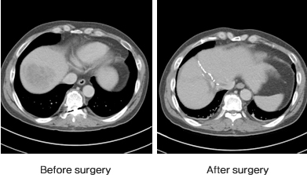

Gil Cancer Center is a leading institution in cancer treatment nationwide.
- Designated as one of finest hospitals for cancer treatment(stomach cancer, colon cancer, liver cancer) by Korean Ministry of Health
- Multidisciplinary approach for cancer patients to provide optimum level of treatment available
- Cancer coordinator system to be able to respond various inquiries and inform patients egarding treatment plans, disease itself during hospital visit
- 24-hour monitoring of diet habit and exercise with the latest medical technology and system
- Novalis Tx radiosurgery, one of the most advanced anti-cancer equipments, delivers non-invasive, personalized cancer treatment that can shape the cancer-fighting beam even in 2.5 mm
Liver Cancer
Partial liver resection, liver transplantation

1. Admission Period : 7 to 10 days 2. Expected Cost : 25,000 - 30,000$ for partial resection / 180,000$ or more for transplantation In case of surgery for hepatocellular carcinoma, anatomical resection of liver will be implemented depending on location ofcancer, increasing the survival rate and decreasing reoccurrence rate. If patient condition requires liver transplantation,professional trans- plantation team will be made and proceed treatment plan.
Stomach Cancer
partial / total stomach resection
1. Admission Period : 7 days
2. Expected Cost : About 20,000$ or more
Diagnostic tests will be performed to find out progress of cancer. Partial or total resection is done via laparoscopic surgery (so called,minimally invasive surgery) depending on location of cancer.
Colorectal Cancer
Laparoscopic colorectal surgery
1. Admission period : 7 days
2. Expected cost : About 20,000$ or more
Laparoscopic surgery is performed through small abdominal incisions (usually 0.5-1.5cm) to remove cancerous tissue as opposed to the larger incisions needed in laparotomy. In case of lower rectal cancer, radiation therapy as well as anticancer treatment will be accompanied together to preserve anal sphincter and to remove cancerous tissue, increasing the survival rate in the end.